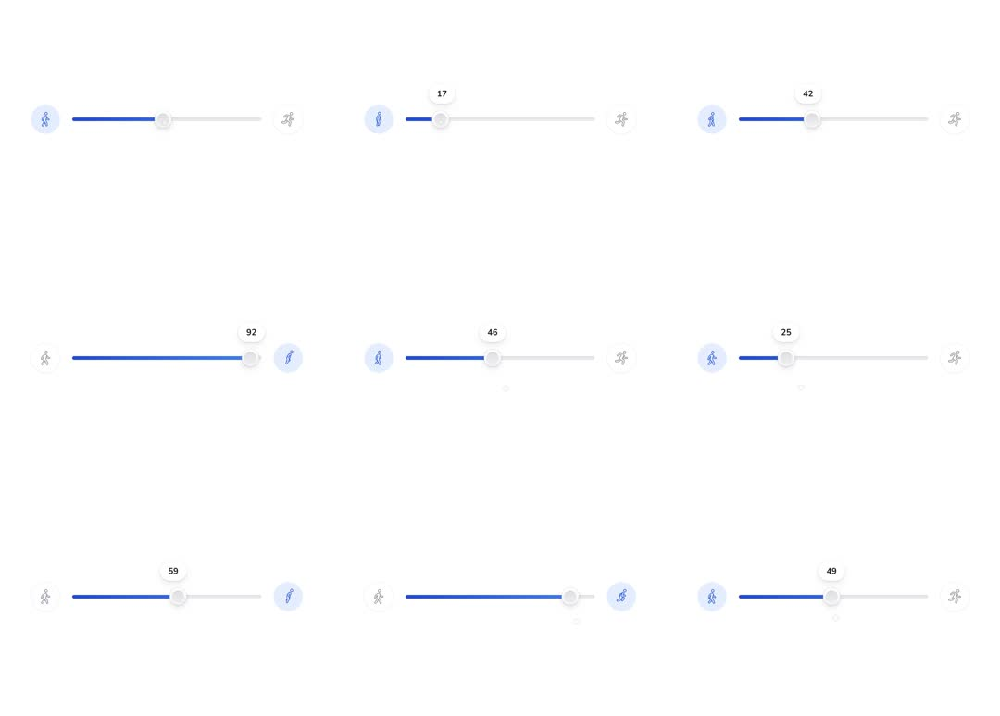

Speed Slider: a range slider flanked by walking and running figure icons; dragging the thumb fills the track blue, pops a value tooltip above the thumb, and activates the matching endpoint icon - the walker lights up at low values, the runner at high values, with the thumb icon itself morphing between walk and run poses.
Media
Frame-by-frame

0-20%
Mid/low values: blue fill from left, tooltip '17' / '42' above the thumb; walker icon (left) sits in an active tinted circle.
20-45%
Drag right to 92: fill extends, tooltip tracks the thumb; right runner icon activates (tinted halo) while walker dims to outline.
45-70%
Back down through 46/25: fill retracts, tooltip number counts down live; endpoint emphasis flips back to the walker.
70-100%
Values 49-59: thumb icon switches pose (walk -> run) around the midpoint; tooltip always centered above thumb with a little stem.
Build prompt
Rebuild this interaction 1:1: a speed slider flanked by walking and running figure icons - dragging the thumb fills the track blue, pops a value tooltip above the thumb, and activates the matching endpoint icon: walker lights at low values, runner at high values, and the thumb's own glyph morphs between walk and run poses around the midpoint.
## Integration
Integration: stack-agnostic spec - springs given as stiffness/damping, timed motions as duration + curve, canvas/shader notes are perf guidance only; map every value to your framework and animation library of choice.
## Scene
Track with blue fill from the left; round thumb; above the thumb a tooltip with a little stem showing the current value; left endpoint: walking figure icon; right endpoint: running figure icon - each sits in a circle that tints when active.
## Motion spec
Pattern: gesture scrub with threshold state changes.
- Drag start: tooltip pops in (scale 0.8 -> 1, 150ms spring), tracks the thumb x exactly; fill extends 1:1 with the thumb.
- Endpoint emphasis: below ~50 the walker is active (tinted circle, filled icon) and the runner dims to outline; above ~50 they flip - crossfade 120ms.
- Thumb glyph: swaps pose (walk -> run) at the same midpoint threshold, 120ms crossfade.
- Value in the tooltip counts live while dragging (tabular-nums).
- Drag end: tooltip fades (150ms).
## Calibration
- Fill and tooltip track 1:1 with zero smoothing - sliders die by lag.
- Threshold flips (endpoints + thumb glyph) share one 120ms crossfade at the same value.
- Tooltip spring pop (0.8 -> 1) on grab is the only flair; the rest is directness.
## Reduced motion
Tooltip appears without pop; glyph swap is instant; fill still tracks 1:1.
## Don't miss
- The thumb glyph morphing pose is the signature detail - don't skip it.
- Endpoint icons are states (outline vs tinted+filled), not just two static icons.
- The tooltip stem stays centered on the thumb even at the track's ends (clamp the bubble, bend the stem if needed).
Mechanics
trigger
thumb drag
elements
track + fill, thumb with tooltip, endpoint icons (walk/run), thumb pose icon
properties
fill width, tooltip text + x, endpoint icon active state, thumb glyph swap at threshold
timing
tooltip pop 150ms on drag start; glyph swap crossfade 120ms at ~50
easing
spring tooltip (scale 0.8->1); instant fill tracking